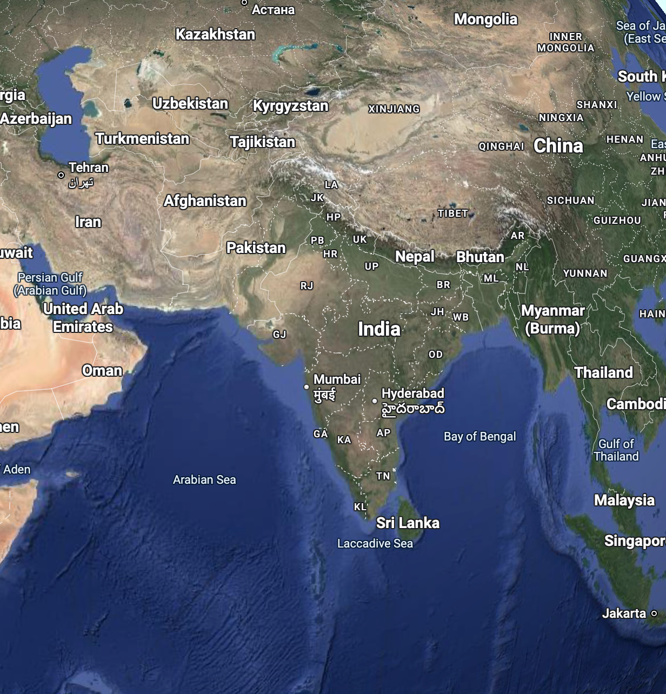
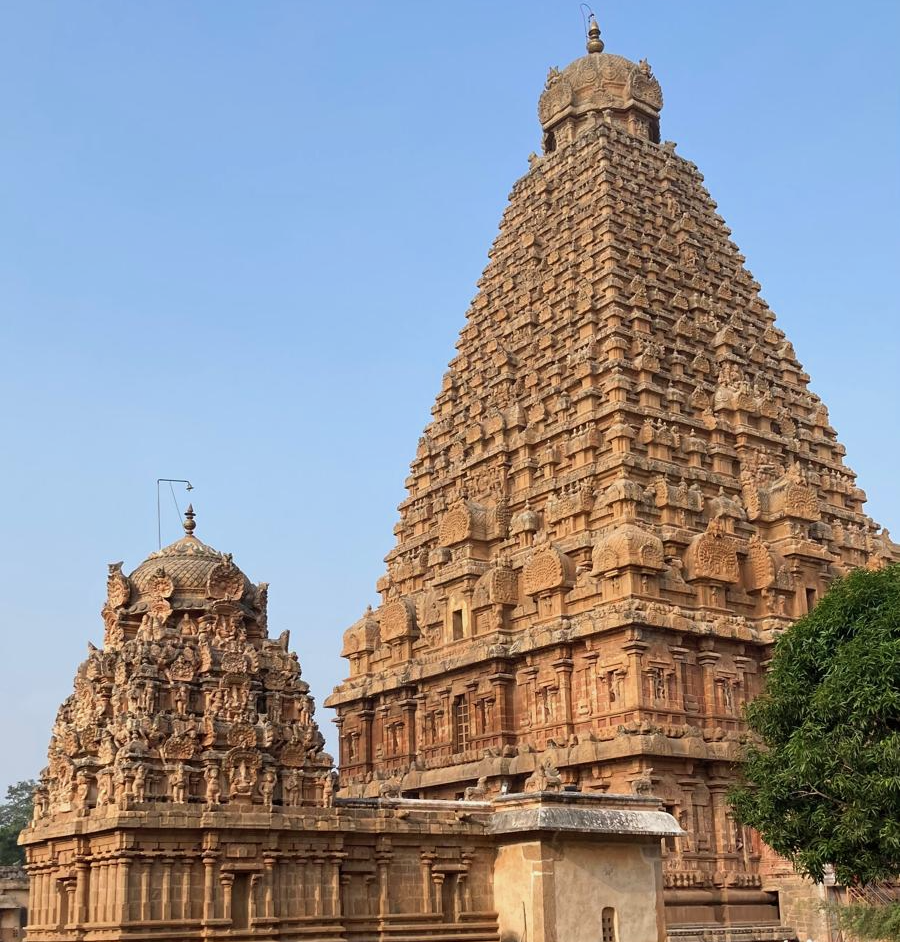

Reise nach deinem Abschluss nach Indien
Ein Reiseführer mit Fokus auf kulturelle Erlebnisse, Buddhismus und soziales Engagement.
मज़े करो - viel Spaß

| Abitur in der Tasche und jetzt??
Erweitere deinen Horizont durch eine Reise ins tiefe Indien und entdecke dabei die außergewöhnliche Kultur! Erlebe ein unvergessliches Freiwilliges soziales Jahr in Indien |
यदि Indien
1. Die besondere Lebensart der Menschen in Indien
| Informationen über Indien
Indien hat 1,4 Milliarden Einwohner und ist somit das bevölkerungsreichste Land der Welt die Menschen verschiedenster ethnischer Herkunft sind und es somit linguistisch sehr vielfältig ist. Das Land lebt auch heute noch in einem sogenannten Kastensystem, obwohl dies offiziell bereits verboten wurde. Indien ist ein sehr religiöses Land mit vielen traditionellen Werten, wie dass die Familie immer an erster Stelle steht. Es gibt zahlreiche Zeremonien, Ritusle und tägliche Gebete, die man Puja nennt. Zudem spielt die Astrologie eine wichtige Rolle, da sie oftmals bei Entscheidungen zur Hilfe kommt. In Indien haben die Menschen hohen Respekt vor älteren Menschen. Trotz der farbfrohen und netten Menschen, leidet die Umwelt stark unter Verschmutzungen, oftmals in Großstädten. |

|
 |
 |
| Das Kastensystem in Indien
In Indien gibt es das Kastensystem. Dies ordnet die einzelnen Familien. Es gibt bestimmte Regeln im Kastensystem, wie zum Beispiel, dass jede Kaste ihre eigenen Pflichten und Moralgesetze zu erfüllen hat, sowie dass man nur in seiner Kaste heiraten darf und Kinder von kastenverschiedenen Eltern verstoßen werden. |  |
Menschen in Indien I
Traditionell leben mehrere Generationen unter einem Dach, wobei es einen Patriarchen gibt, meist der älteste Mann, der oft das Entscheidungszentrum der Familie darstellt. Die Familienmitglieder unterstützen sich und die Familie bringt viele Verpflichtungen mit sich. Die Ratschläge der älteren Verwandten werden geschätzt und oftmals befolgt. Ehen werden meistens noch arrangiert und als prächtige Feste gefeiert. Kinder werden streng erzogen und in manchen Fällen gibt es noch körperliche Strafen.
Menschen in Indien II
In Indien haben die Mahlzeiten mit der Familie ebenfalls einen hohen Stellenwert. Sie werden in vielen Regionen mit den Händen verspeist. Der Einkaufsprozess, der meistens auf Märkten stattfindet, wird als Freizeitaktivität gesehen und nicht als Notwendigkeit. Dabei dürfen Gewürze wie Kurkuma, Chili, Kardamom, Koriander und Ingwer nicht fehlen, da sie Hauptzutaten jeglicher Gerichte sind. Viele Inder leben vegetarisch, da meistens ihre Religion und ihr Stellenwert im Kastensystem dies verbietet. Trotz der traditionellen Gerichte, findet man in den Großstädten auch street food und es werden immer mehr Einkaufszentren gebaut.In Indien gibt es ein Nationalgetränk, das Chai heißt. Es besteht aus Tee mit Milch und Gewürzen.
Menschen in Indien III
Zeit mit der Familie und mit Freunden ist ein wichtiger Aspekt in Indien. Es gibt viele Festivals und religiöse Zeremonien. In der indischen Popkultur spielt Bollywood eine zentrale Rolle, da dort bekannte Filme gedreht wurden. Daneben hat auch Sport in Indien einen hohen Stellenwert. Es wird vor allem Cricket gespielt. Zu den traditionellen Spielen zählen Kabaddi und Kho-Kho. Diese werden in Schulen und auf Dorffesten gespielt.
Gesellschaft
Beziehungen stehen in Indien an erster Stelle. Daher werden sie als wichtiger wahrgenommen als formale Regeln. Es gibt oft flexible Regeln und Gesetze. Auch die Pünklichkeit wird in Indien nicht streng genommen, da es dort eine "indische Zeit" gibt. Die gesellschaftlichen Hierahien werden respektiert und eingehalten. Die Inder sind emotional ausdrucksstark und herzlich. Sie lachen viel und diskutieren lebhaft. Zu ihrer Natur zählt auch, das sie an das Karma und an das Schicksal glauben.
Umgang mit Ausländern und Einwanderern
Die meisten Inder sind gastfreundlich, da bei ihnen das Motto: Athithi Devo Bhava - der Gast ist Gott, herrscht. Die Einwohner bestaunen meist Ausländer und sprechen sie an, da sie Interesse an deren Heimat haben. Dies geschiet eher in kleineren Städten und in ländlichen Gebieten als in Großstädten. Dennoch gibt es auch Vorurteile und Diskriminierung.2. Informationskapitel über den Buddhismus
Die Religion: Buddhismus
Die Religion kommt auf das Leben des Buddhas zurück. Buddha war der Erleuchter / Reformierter des Hinduismus. Er begab sich auf die Suche nach Erlösung von Leid und Tod. Er kam zu der Erkenntnis: Leid und Tod beherrschen das Leben. Das Endziel des buddhistischen Weges ist die Befreiung aus dem Kreis der immer wiederkehrenden Welt der Erscheinungen und dem damit notwendigerweise verbundenen Leiden.
Buddha
Siddharta Gautama auch der Erleuchteter/Buddha genannt, wurde in Nordindien um 560v. Ch. geboren. Man sagte ihm voraus er würde entweder ein mächtiger Herrscher oder ein abgewandter Buddha werden. Sein Vater wollte ihn zu einem mächtigen Herrscher machen. Buddha begegnete kranken Menschn und kam zu der Erkenntnis, dass Leid und Tod das Leben beherrschen. Nach seiner Heirat und der Geburt seines Sohnes, floh er von seiner Familie, schnitt sich die Haare ab, lege seine vornehmende Kleidung ab und nahm stattdessen Lumpen. Und begann seine Suche nach der Erlösumg von Leid und Tod. Buddha gewann auf seiner Suche nach der Erlösung fünf Jünger, die ihn dann nach dem einnehmen von Nahrung, die er zur Kräftigung um die Erlösung zu finden brauchte, verließen. Buddha setzte sich unter einen Baum und meditierte. Dort entstanden dann vier edelen Pfade. Nachdem er die Wahrheiten fand kamen seine Jünger zurück und es folgten viele Anhänger vorallem aus den unteren Schichten, deshalb waren die Bachmanen gegen den Buddhismus. Buddha wurde zu einer Vorkörperung von Vishnu (einer der drei indischen Hauptgötter) erklärt und somit wurde der Buddhismus fast ganz aus Indie vertrieben.
Die vier edlen Wahrheiten von Buddha
- Dukkha: Leben besteht nur aus Leiden
- Tanha: Begierde und Gier sind der Ursprung des Leidens
- Nirodha: Es gibt ein Ende von Leiden und Begehren
- Marga: Pfad zur Glückseligkeit
Drei Belangen
- Ethisches Verkangen (Sila): Rechte Rede, rechtes Handeln, rechter Lebenserwerb
- Geistige Disziplin (Samadhi): Rechte Mühe, Rechte Achtsamkeit, Konzentration
- Weisheit (Prajana): Rechtes Verstehen der Welt, Rechtes Denken
3. Die Besonderheiten des Buddhismus in Indien
Buddhismus in Indien
4. Die buddhistischen Sehenswürdigkeiten und inwiefern sie die Besonderheiten des Buddhismus in Indien repräsentieren
- Bodh Gaya - berühmtestes Mahabodhi-Tempel, Lord Buddhas Statue, zweiter heiliger Ort unter dem Bodhi-Baum hat Buddha hat dort meditiert (Erleuchtung). Nachkommen von dem Baum.
- Kushinagar, Uttar Pradesh - vierter heiligsten Orte, Ramabhar stupa und Mahaparinirvana-Tempel = Buddha Mahaparinirvana kam dort mit 81 Jahren an. Gab dort eine letzte Lehre und erklärte, dass der Verfall in alle Lebewesen vererbt wird. Hier starb Buddha
- arnatha, Uttar Pradesh - Chaukhandi und Dhamekh Stupa von Sarnath, dritter heiligsten Ort = Dort predigte Buddha zum ersten Mal über die vier edelen Wahrheiten, edler achtfacher Pfad
- Dharmshala, Himachal Pradesh - sehr schöne Natur, kann man Meditationskurs machen von Sikhara Dhamma- Tsuglagkhang-Komplex und Palpung Sherabling Klostersitz
- Shravasti, Uttar Pradesh - Stupas: Kachhi Kuti, Pakki Kuti= Buddha übernachtete dort
- Lumbini - erster heiligster Ort= Geburtsort von Buddha-Lumbini sind Kapilvastu, Maya Devi Temple, Devdaha, Ashoka Pillar, Tibetan Temple
5. Freiwilligenarbeit mit Kindern in Indien
Die Dauer des FSJ beträgt zwischen 6 und 12 Monaten. Es kann in Kindergärten, in Waisenhäusern oder mit Straßenkindern gemacht werden. Dort unterstützen sie die Mitarbeiter bei täglichen Herausforderungen, beim Unterricht oder bei der Hausaufgabenbetreuung. Es werden Ausflüge geplant und durchgeführt sowie Sportaktivitäten geleitet. Dabei solltest du auf jeden Fall eigene kreative Angebote und Ideen mitbringen, sodass die Kinder Spaß haben.
Zu den Vorraussetzungen der Freiwilligenarbeit zählt, dass du zwischen 18 und 28 Jahren bist. Bei einer Beeinträchtigung oder einer Behinderung kannst du auch bis zu 35 Jahre alt sein. Du benötigst einen Schul- bzw. Berufsabschluss oder eine anderweitige Eignung. Außerdem brauchst du eine deutsche Staatsbürgerschaft oder ein dauerhaftes Aufenthaltsrecht in Deutschland. Du solltest vor allem Spaß an der Arbeit mit Kindern haben, damit sich die Kinder in deiner Nähe wohlfühlen. Zudem sollten zu deinen Eigenschaften Geduld, Offenheit und Eigeninitiative zählen, damit du deine eigenen Ideen einbringen kannst. Außerdem brauchst du Englischkenntnisse für die Kommunikation und Flexibilität für spontane Aufgaben und Herausforderungen.
Arbeit mit Kindern
- Schule mit über 280 Schülern, in den Klassenstufen 1 bis 7
- Einsatzort: Linambudhi Palya, Mysore, Indien
- Sprache: Englisch
- Startmonat: ab September / 11 Monate
Weitere Informationen
Freiwilligenarbeit in Indien – Mitarbeit im Kinderdorf in Grundlupet
- Kinderdorf mit Kindern (5-18 Jahre) aus den ärmsten Schichten
- Einsatzort: Grundlupet, Indien
- Sprache: Englisch
- Startmonat: ab September / 6 Monate
Weitere Informationen
6. Reisetipps - damit du dich wohlfühlst
- Jüngere Menschen begrüßen Ältere mit gefalteten Händen ("Namaste") - zeigt Respekt
- Alle Inder ziehen ihre Schuhe in Häusern und Tempeln aus.
- Inder essen nur mit rechts und mit den Händen. Die linke Hand gilt als unrein
- Beim Geben von Dokumenten immer beide Händen benutzten
- Trinkgeld in Höhe von 5-10%, da Angestellte darauf angewiesen sind. Auch in Hotels. Bei Taxifahrten nur wenn man Hilfe braucht.
- Kühe sind heilig- nicht verscheuchen- gerne streicheln und füttern
- Die Frau ist in Indien weniger wert als der Mann. Sie tragen Kopftücher
- Man sollte keine Shorts(Männer), kürzere als knielange Röcke, schulterfreie oder trägerlose Tops und keine Bikinis tragen, um nicht zu viel Haut zu zeigen.